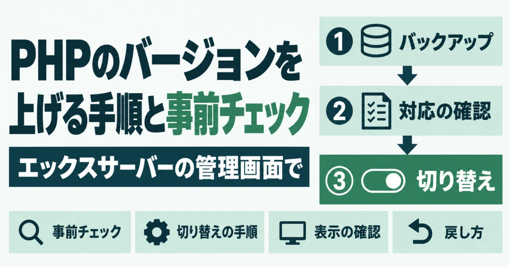
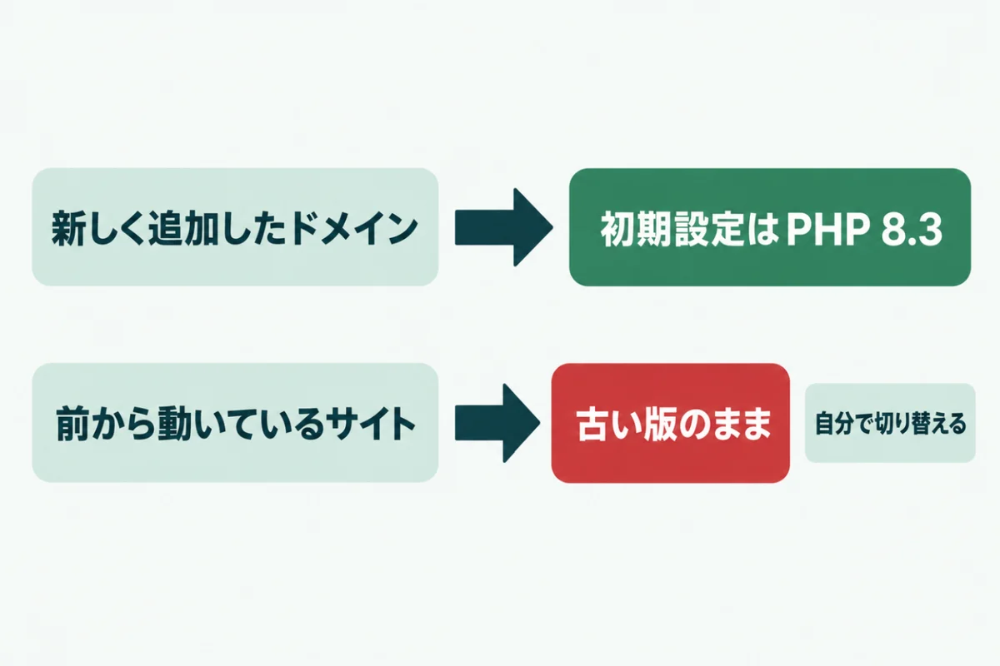
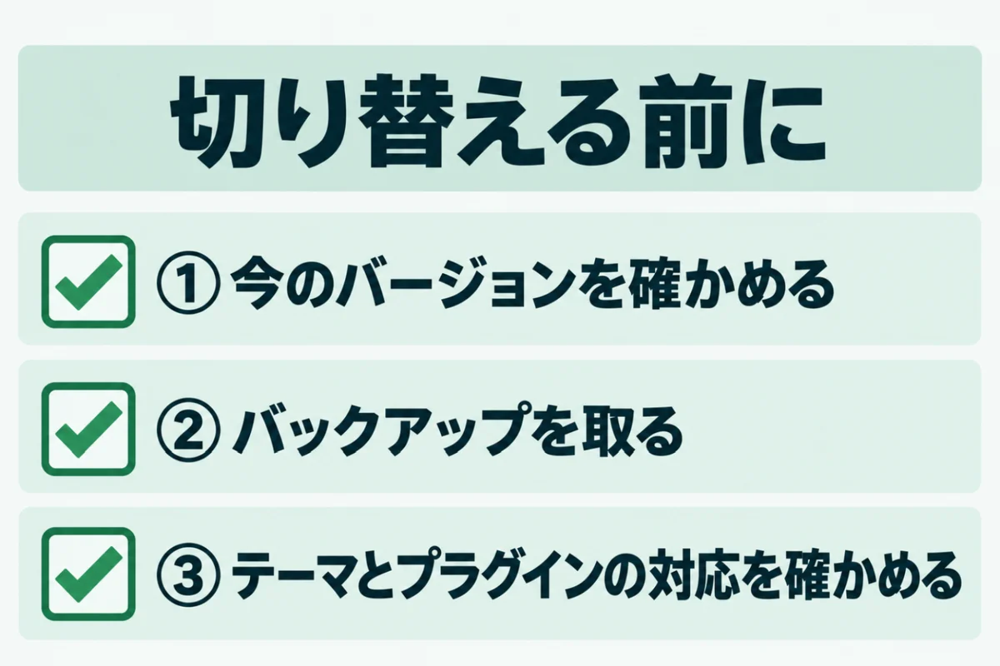
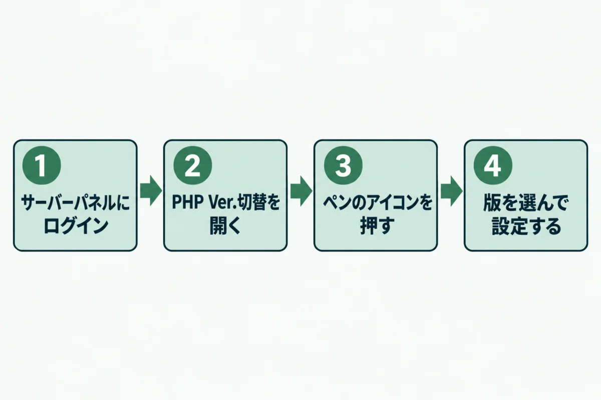
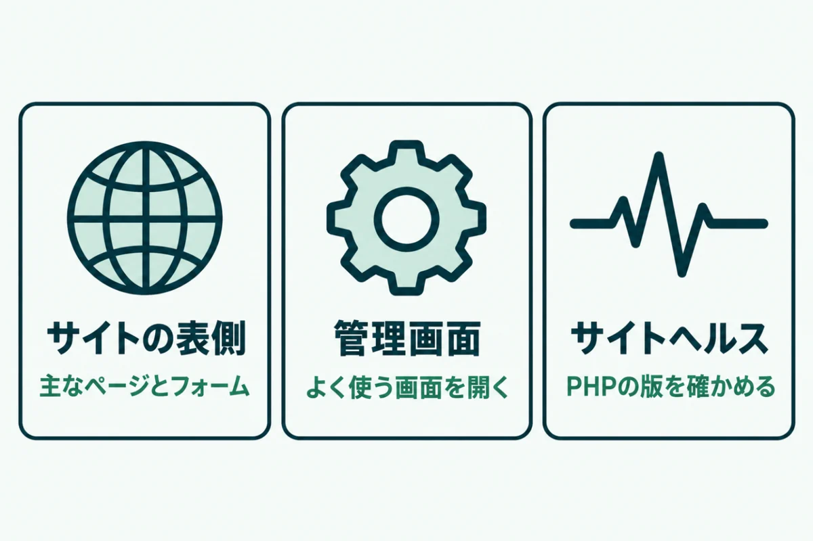
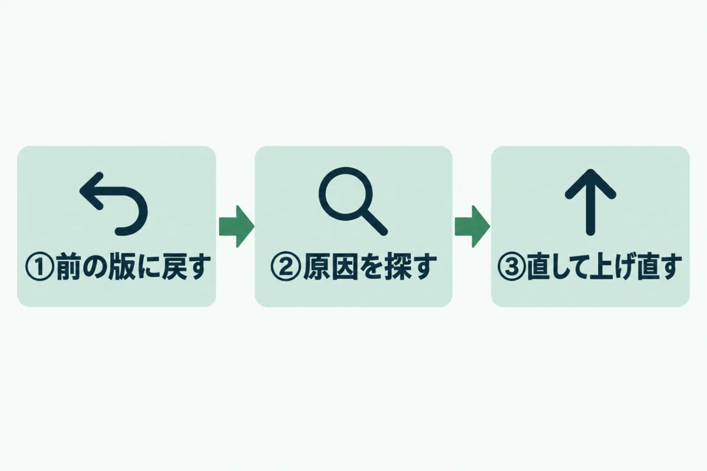

エックスサーバーでPHPのバージョンを上げる手順と事前チェック

「エックスサーバーのPHPを上げてと言われたけれど、押して大丈夫？」と迷っていませんか？
切り替えはボタン1つでできますが、準備をしないと表示が崩れることがあります。
この記事では、エックスサーバーでPHPのバージョンを安全に上げる手順を紹介します。事前のチェックから、切り替えたあとの確認、元に戻す方法までまとめました。
運営者が自社サイトで実際に行った手順なので、作業の前に一度通して読んでおくと安心です。
エックスサーバーでPHPのバージョンを上げる前に知っておきたいこと

エックスサーバーでPHPのバージョンを上げる前に、どの版を選べばよいかを知っておきましょう。サポートが続く版を選ぶのが基本です。
PHPには版ごとに、弱点の修正が届く期限があります。期限を過ぎた版は、弱点が見つかっても直されません。サーバー会社が自動で上げてくれるわけでもないため、自分で切り替える必要があります。
サポートが続くPHPのバージョン
PHPの公式サイトによると、各版の修正が届く期限は次のとおりです。2026年10月28日時点の情報で確かめました。
| バージョン | 弱点の修正が届く期限 |
|---|---|
| PHP 8.2 | 2026年12月31日 |
| PHP 8.3 | 2027年12月31日 |
| PHP 8.4 | 2028年12月31日 |
| PHP 8.5 | 2029年12月31日 |
PHP 8.1より古い版は、すでに期限を過ぎています。8.2を使っている場合も、年内に上げる計画を立ててください。
今動いているサイトは自動では上がらない
エックスサーバーは2025年7月28日から、新しいドメインの初期設定をPHP 8.3にしました。ただし、それより前から動いているサイトの版は変わりません。
何年も前に作ったサイトは、作った当時の古い版のまま動いていることがよくあります。WordPress.orgもPHP 8.3以上を推奨しています。8.3より古ければ、切り替えを考えましょう。
エックスサーバーでPHPのバージョンを上げる前の3つの事前チェック

エックスサーバーでPHPのバージョンを上げる前に、3つのことを確かめます。準備なしで切り替えると、画面が真っ白になることがあります。
特に、長く手を入れていないサイトは注意が必要です。古いテーマやプラグインが新しいPHPに対応していないと、切り替えた瞬間にエラーで止まります。どれも数分から数十分で終わる作業です。
① 今のPHPのバージョンを確かめる
まず、今どの版で動いているかを確かめます。サーバーパネルで「PHP Ver.切替」を開くと、ドメインごとの今の版が表示されます。
WordPressなら、管理画面の「ツール」にある「サイトヘルス」でも分かるでしょう。「情報」の「サーバー」の欄を開いてください。今の版を控えておくと、元に戻すときに迷いません。
② バックアップを取る
次に、サイトのファイルとデータベースを控えます。エックスサーバーには自動バックアップがありますが、作業の直前に自分でも取っておくと安心です。
WordPressなら、バックアップ用のプラグインを使う方法もあるでしょう。控えはサーバーとは別の場所にも保存すると、万一のときに確実に戻せます。データベースだけ取り忘れることが多いので、両方そろっているかを確かめてください。
③ テーマとプラグインの対応を確かめる
使っているテーマとプラグインが、新しいPHPに対応しているかを確かめます。配布ページで最終更新日を見て、何年も更新されていないものは要注意です。
運営者の自社サイトでも、古い有料テーマ用のプラグインがPHP 8でエラーを起こしました。管理画面が開かなくなる不具合で、新しい版に入れ替えてから切り替えています。
エックスサーバーでPHPのバージョンを切り替える手順

事前チェックが済んだら、エックスサーバーのサーバーパネルでPHPのバージョンを切り替えます。ドメインごとに切り替える仕組みなので、ほかのサイトには影響しません。
1つのサーバーで複数のサイトを動かしている場合は、1つずつ切り替えて確かめるのが安全です。アクセスの少ない時間帯に作業すると、不具合が出ても影響を小さくできます。
サーバーパネルで切り替える
エックスサーバーの公式マニュアルによると、手順は次のとおりです。
- サーバーパネルにログインする
- 「PHP Ver.切替」をクリックする
- 変えたいドメインの右にあるペンのアイコンを押す
- 「変更後のバージョン」で版を選び、「設定する」を押す
以前の画面では、最後のボタンが「変更」と表示されます。ドメインが多いときは、右上の絞り込みにドメイン名を入れると探しやすいでしょう。
どのバージョンを選ぶか
選ぶ版に迷ったら、PHP 8.3を選んでください。エックスサーバーの推奨版で、WordPress.orgの推奨にも合い、2027年末まで修正が届きます。
8.4や8.5はさらに長く使えますが、古いプラグインが対応していないこともあります。古いPHPから一気に最新まで上げないほうが、原因を切り分けやすいはずです。7.4のような古い版からなら、8.3で様子を見るとよいでしょう。
エックスサーバーでPHPのバージョンを上げたあとの表示の確認

エックスサーバーでPHPのバージョンを上げたら、すぐにサイトの表示を確かめます。表側が無事でも、管理画面だけ壊れていることがあります。
表側と管理画面の両方を見て、エラーの表示がないかを確かめてください。運営者は切り替えの前と後で全ページを読み込み、見出しや画像の数が変わっていないかまで比べています。
サイトの表側を確かめる
トップページと、よく見られているページをいくつか開きます。問い合わせフォームがあれば、送信の手前まで進めて動くかを確かめましょう。
「Fatal error」や「重大なエラー」という表示が出たら、PHPの版に合わない部分があります。ブラウザの記録が残っていると古い表示のままのこともあるので、再読み込みしてから判断してください。
管理画面とサイトヘルスを確かめる
管理画面にログインし、ダッシュボードや設定の画面をひととおり開きます。プラグインの設定画面だけエラーになることもあるため、よく使う画面は一度ずつ開いてみましょう。
最後に「サイトヘルス」の「情報」で、PHPの版が切り替えた版になっているかを確かめます。ここで古い版のままなら、切り替えが反映されていません。
エックスサーバーでPHPのバージョンを元に戻す方法

エックスサーバーでPHPのバージョンを上げて不具合が出たら、まず元の版に戻します。戻すのも同じ画面から数分でできるので、慌てなくて大丈夫です。
ただし、戻したままにはしないでください。古い版は弱点が直されないため、原因を直してから上げ直す必要があります。戻すことは、あくまで時間を稼ぐための一時的な手段です。
同じ画面で前の版を選び直す
サーバーパネルの「PHP Ver.切替」を開き、同じドメインのペンのアイコンを押します。事前チェックで控えておいた版を選び、「設定する」を押してください。
公式のよくある質問でも、別の版に変えて表示を確かめるよう案内しています。戻したら、表示が元に戻ったかを確かめましょう。ブラウザの再読み込みも忘れずに行ってください。
原因を直してから上げ直す
エラーの表示に、原因のファイルの場所が書かれていることがあります。「plugins」の後ろの名前がプラグインの名前、「themes」の後ろの名前がテーマの名前です。
原因が分かったら、そのプラグインを更新するか、代わりのものに置き換えます。直したら、もう一度事前チェックから進めると安全です。自分で直すのが難しい場合は、制作会社や専門家に相談してください。
URLを入れるだけで、PHPやWordPressの版を含む7項目を無料で判定します。登録はいりません。
無料で診断するエックスサーバーのPHPバージョンに関するよくある質問
PHPのバージョンを切り替えると、サイトは止まりますか？
切り替えの作業でサイトが長く止まることは、ふつうはありません。ただし、テーマやプラグインが新しい版に対応していないと、エラーで表示されなくなることがあります。そのため、アクセスの少ない時間帯に作業するのが安心です。切り替えたらすぐに表示を確かめ、問題があれば元の版に戻しましょう。事前にバックアップを取っておけば、万一のときも落ち着いて対応できます。
エックスサーバーで選べるPHPのバージョンはどれですか？
エックスサーバーのマニュアルでは、PHP 7.2から8.5までの版が選べると案内されています。ただし、修正が届く期限が切れた古い版も含まれています。選べるからといって、安全とは限りません。2026年10月時点では、8.3以上を選ぶのが基本です。8.2は2026年12月31日でサポートが終わるため、新しく選ぶのは避けてください。
PHPのバージョンは、どのくらいの頻度で上げればいいですか？
使っている版のサポートが終わる前に上げるのが目安です。PHPは毎年1つずつ新しい版が出て、それぞれ約4年でサポートが終わります。数年に1回は切り替えが必要になると考えておきましょう。年に1回、PHPの公式サイトで期限を確かめる習慣をつけると、慌てずに済みます。WordPressの管理画面に更新のお知らせが出たときも、見直すきっかけにしてください。
WordPress以外のサイトでも、同じ手順で切り替えられますか？
切り替えの操作そのものは同じです。サーバーパネルの「PHP Ver.切替」から、ドメインごとに版を選びます。ただし、WordPress以外のサイトでは、サイトヘルスのような確認の画面がありません。自作のプログラムや古いシステムを使っている場合は、作った会社に新しい版で動くか確かめてもらいましょう。確かめられないまま切り替えるのは避けてください。
自分で作業するのが不安なときはどうすればいいですか？
制作会社や保守を頼んでいる会社に、事前チェックからまとめて依頼するのが確実です。依頼するときは、今の版と、上げたい版を伝えるとやりとりが早く進みます。今の版が分からなければ、サイトドックの無料簡易診断で外から見える範囲を確かめられます。古いプラグインが多いサイトは、PHPの切り替えと一緒にプラグインの整理も頼むと安心です。
まとめ
エックスサーバーでは「PHP Ver.切替」から、ドメインごとにPHPのバージョンを上げられます。今動いているサイトの版は自動では上がらないため、自分で切り替える必要があります。
切り替える前に、今の版の確認、バックアップ、テーマとプラグインの対応の3つを済ませてください。上げたあとは表側と管理画面を確かめ、不具合があれば同じ画面で元に戻せます。
PHP 8.2は2026年12月31日でサポートが終わります。年内に8.3以上へ上げる予定を決めるところから始めましょう。
狙われる前に、弱点をふさぐ。
URLを入れるだけで、数十秒で判定が出ます。登録はいりません。